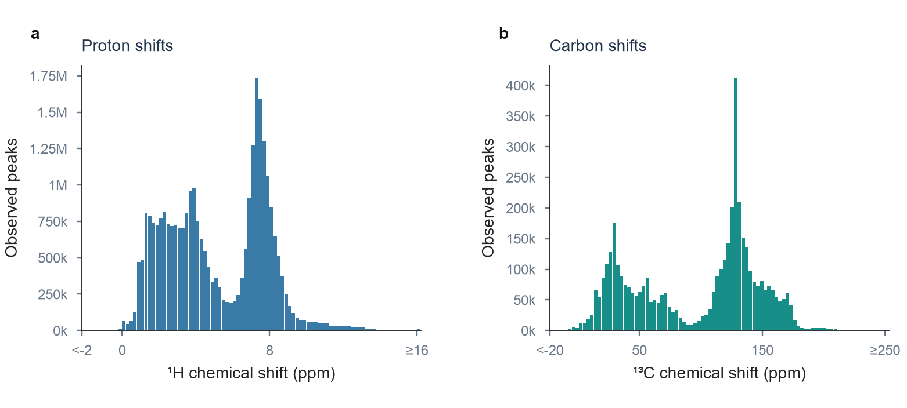

NMR 数据
NMR 记录将分子结构与化学位移连接起来。清洗后的数据覆盖氢、碳、硼、氟、硅和磷；化学位移单位为 ppm，采集频率单位为 MHz。
清洗后的 H/C 集合
项目 |
数量 |
|---|---|
分子身份 |
2,678,511 |
¹H spectra |
2,720,828 |
¹³C spectra |
252,015 |
¹H peaks |
29,270,201 |
¹³C peaks |
4,380,626 |
同时有 H/C 的分子 |
238,226 |
清洗包括验证结构、检查分子中存在对应核种、解析数值化学位移，以及规范分子式。保留的每个分子至少具有一条可用的氢谱或碳谱，并保留分子身份和原有划分角色。
字段 |
类型／单位 |
含义 |
|---|---|---|
|
string |
分子结构与标准身份。 |
|
string |
由结构规范化的分子式。 |
|
list[float] / ppm |
解析后的氢谱与碳谱峰位置。 |
|
list[dict] |
谱文本、核种、频率和来源行信息。 |
|
[has_H, has_C] |
可用的 NMR 通道。 |
|
dict |
各核种对应的采集与来源信息。 |
|
string |
原文献、发表年份与来源库。 |
训练和绘图使用数值数组；研究多重性、积分或耦合常数时保留谱文本。构建条件相关模型时，从对应核种的原记录中选择溶剂和频率。

杂核视图
核种 |
谱数 |
分子数 |
|---|---|---|
11B |
1,140 |
1,017 |
19F |
56,679 |
50,402 |
29Si |
726 |
636 |
31P |
21,662 |
18,238 |
每条记录包含 smiles、standard_inchikey、nucleus、peaks_ppm、chemical_shift、solvent、frequency 与来源文献。区间峰用中心位置表示。
from openmolspec.dataset import molspectra
boron = molspectra("opendatalab_11b", root="data/experimental")
record = boron["test"].select(modalities="11B").head(1)[0]
print(record["smiles"], record["peaks_ppm"])
NMRexp
NMRexp 提供从化学文献提取的实验化学位移，按核种保存在 Parquet 文件中。筛选后的本地视图包含以下谱记录。
核种 |
谱数量 |
分子数量 |
|---|---|---|
1H |
1,651,798 |
1,417,274 |
13C |
1,439,328 |
1,265,481 |
19F |
195,070 |
179,277 |
31P |
32,889 |
30,031 |
11B |
16,871 |
15,242 |
29Si |
2,384 |
2,310 |
NMRSpec 和 NMRGym 提供谱结构检索及结构解析测试集。整理后的 H/C JSONL 视图分别用 molspectra("nmrspec_test", root=...) 与 molspectra("nmrgym_test", root=...) 加载。
参考文献
OpenDataLab. WanJuan MolSpectra, version 1.0.3. Experimental molecular spectroscopy dataset. Source
Wang, J.-J., Jin, Y., Zhi, C.-Y., et al. NMRexp: A database of 3.3 million experimental NMR spectra. Scientific Data 12, 1954 (2025). doi:10.1038/s41597-025-06245-5. Source
Yang, L., Yang, Z., Xie, J., Wang, Y., Gao, B., Fu, T., Wei, X., Sun, J., Wu, J., He, C., Li, Y. & Gu, Q. NMRTrans: Structure Elucidation from Experimental NMR Spectra via Set Transformers. arXiv:2602.10158 (2026). Source
Fang, Z., Yang, C., Yu, H., Luo, H., He, H., Xie, J., Yang, Z. & Xia, J. NMRGym: A Comprehensive Benchmark for Nuclear Magnetic Resonance Based Molecular Structure Elucidation. arXiv:2601.15763 (2026). Source